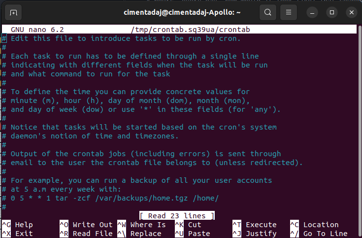

Automating Web Scraping
Automating Web Scraping
Ever wondered how you can grab real time data, on demand, without moving a finger?

Welcome to the world of automation!
Automating Web Scraping
One off scraping is just as good
One off scraping will solve many problems as is usually the first starting point
However, you might need this to collect data that is changing constantly
Sometimes you want to gather info the dissappears
Ex: weather data, financial data, sports data, political data
Automating Web Scraping

Automating Web Scraping
Since we want to automate a program, we first need one. Let’s recycle one from our example on El País:
# Load all our libraries
library(scrapex)
library(xml2)
library(magrittr)
library(purrr)
library(tibble)
library(tidyr)
library(readr)
# If this were being done on the real website of the newspaper, you'd want to
# replace the line below with the real link of the website.
newspaper_link <- elpais_newspaper_ex()
newspaper <- read_html(newspaper_link)
all_sections <-
newspaper %>%
# Find all <section> tags which have an <article> tag
# below each <section> tag. Keep only the <article>
# tags which an attribute @data-dtm-region.
xml_find_all("//section[.//article][@data-dtm-region]")
final_df <-
all_sections %>%
# Count the number of articles for each section
map(~ length(xml_find_all(.x, ".//article"))) %>%
# Name all sections
set_names(all_sections %>% xml_attr("data-dtm-region")) %>%
# Convert to data frame
enframe(name = "sections", value = "num_articles") %>%
unnest(num_articles)Automating Web Scraping
Our goal with this scraper is to monitor El País
How it distributes news across different categories
Studying whether there are important patterns
final_df# A tibble: 11 × 2
sections num_articles
<chr> <int>
1 portada_apertura 5
2 portada_arrevistada 1
3 portada_tematicos_science,-tech-&-health 5
4 portada_tematicos_business-&-economy 2
5 portada_tematicos_undefined 1
6 portada_branded_ 2
7 portada_arrevistada_culture 5
8 portada_tematicos_work-&-lifestyle 3
9 portada_arrevistada 1
10 portada_tematicos_celebrities,-movies-&-tv 4
11 portada_tematicos_our-selection 4Automating Web Scraping
The scraper is missing one step: saving the data to CSV.
Logic:
If this is the first time the scraper is run, save a csv file with the count of sections
If the CSV with the count of section exists, open the CSV file and append the newest data with the current time stamp
This approach will add rows with new counts every time the scraper is run.
Automating Web Scraping
library(scrapex)
library(xml2)
library(magrittr)
library(purrr)
library(tibble)
library(tidyr)
library(readr)
newspaper_link <- elpais_newspaper_ex()
all_sections <-
newspaper_link %>%
read_html() %>%
xml_find_all("//section[.//article][@data-dtm-region]")
final_df <-
all_sections %>%
map(~ length(xml_find_all(.x, ".//article"))) %>%
set_names(all_sections %>% xml_attr("data-dtm-region")) %>%
enframe(name = "sections", value = "num_articles") %>%
unnest(num_articles)
# Save the current date time as a column
final_df$date_saved <- format(Sys.time(), "%Y-%m-%d %H:%M")
# Where the CSV will be saved. Note that this directory
# doesn't exist yet.
file_path <- "~/newspaper/newspaper_section_counter.csv"
# *Try* reading the file. If the file doesn't exist, this will silently save an error
res <- try(read_csv(file_path, show_col_types = FALSE), silent = TRUE)
# If the file doesn't exist
if (inherits(res, "try-error")) {
# Save the data frame we scraped above
print("File doesn't exist; Creating it")
write_csv(final_df, file_path)
} else {
# If the file was read successfully, append the
# new rows and save the file again
rbind(res, final_df) %>% write_csv(file_path)
}Automating Web Scraping
Summary:
This script will read the website of “El País”
Count the number of sections
Save the results as a CSV file at
~/newspaper/newspaper_section_counter.csv.That directory still doesn’t exist, so we’ll create it first.
Automating Web Scraping
New tool: The Terminal

Open with CTRL + ALT + t.
Automating Web Scraping
Programatically create directories, files, search for files, execute scripts 🦾

Automating Web Scraping
With the directory created, we copy the R script and check that is there ls
ls ~/newspaper/
# newspaper_scraper.Rchange directories with the
cdcommand, which stands forchangedirectory,followed by the path where you want to switch to.
For our case, this would be
cd ~/newspaper/
Automating Web Scraping

Automating Web Scraping
To execute an R script from the terminal you can do it with the
Rscriptcommand followed by the file name.For our case it should be
Rscript newspaper_scraper.R

Automating Web Scraping
The first few lines show the printing of package loading
File doesn't exist; Creating itshows how it’s creating the first file

cron, your scheduling friend
Our scraper works
All infrastructure is ready (directories, excel file)
How do we automate it?
Here’s we cron comes in
# Linux
sudo apt-get update
sudo apt-get install cron
# MacOS
brew install --cask croncron, your scheduling friend
Confirm it works:

The output means you have no scheduled scripts in your computer.
Anatomy of a schedule
- A schedule
- What to execute
Rscript ~/newspaper/newspaper_scraper.R

Anatomy of a schedule
* * * * *every minute, hour, of every day of the month, every month, every day of the week.30 * * * *run at minute 30 of each hour, each day, each month, each day of the week30 * * * 3run every 30 minutes on Wednesdays30 5 * * 6,7run on the 30th minute of the 5th hour every month on Saturday and Sundayif day of week, the last slot, clashes in a schedule with the third slot which is day of month then any day matching either the day of month, or the day of week, shall be matched.
Anatomy of a schedule
Let’s say we wanted to run our newspaper scraper every 4 hours, every day, how would it look like?
We have no way of saying, regardless of the day / hour / minute, run the scraper every X hours.
1 */4 * * *run at minute 1 every 4 hours, every day, of the year1 */4 * * */2run at minute 1 every 4 hours, every two days
These simple rules will allow you to go very far in scheduling scripts for your scrapers or APIs.
Scheduling our scraper
Schedule our newspaper scraper to run every minute, just to make sure it works.
Will get messy because it'll append the same resultsin the CSV file continuously.
However, it will give proof that the script is running on a schedule.
If we want this to run every minute, our cron expression should be this
* * * * *
Scheduling our scraper
First steps with cron is to pick an editor:

Pick nano, the easiest one.
Scheduling our scraper

Here is where we write * * * * * Rscript ~/newspaper/newspaper_scraper.R
Scheduling our scraper

Scheduling our scraper
To exit the cron interface, follow these steps:
Hit
CTRLandX(this is for exiting thecroninterface)It will prompt you to save the file. Press
Yto save it.Press
enterto save thecronschedule file with the same name it has.
Nothing special should be happening at the moment. Wait two or three minutes
Scheduling our scraper

Scheduling our scraper
Remove entire line to remove schedule and save again
Caveats
Computer needs to be on all the time; this is why servers are used
croncan also become complex if your schedule patterns are difficult.Backtracking a failed
cronjob is tricky because it’s not interactiveSetting up production ready scrapers are difficult: databases, interactivity, persistence, avoid bans, saving data real time, etc..